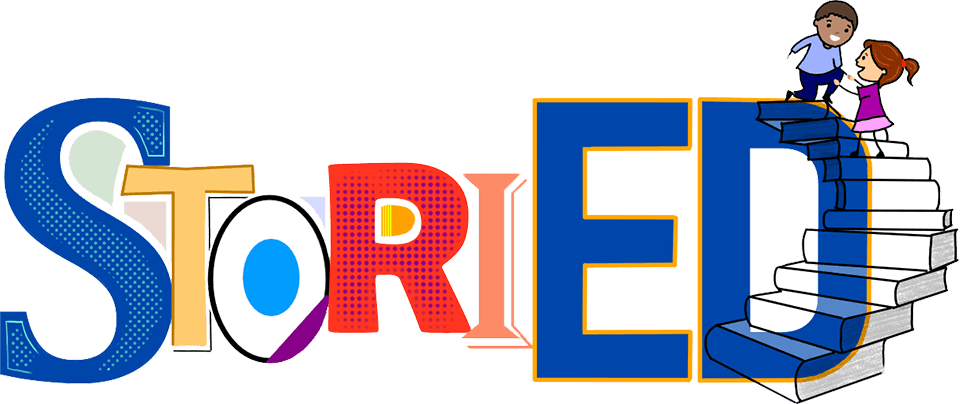

StoriED is a literacy initiative fiscally sponsored through New Sun Rising that is actively working to amplify the humanistic stories of diverse educators and improve literacy outcomes while addressing the social emotional learning needs of students in grades K-5 through a preservice teacher literacy fellowship housed at The University of Pittsburgh, providing one-to-one tutoring and Cultural Literacy Saturdays. Our work is grounded in Gholdy Muhammad's Culturally Responsive Pillars of identity, criticality, intellect, skills and joy.